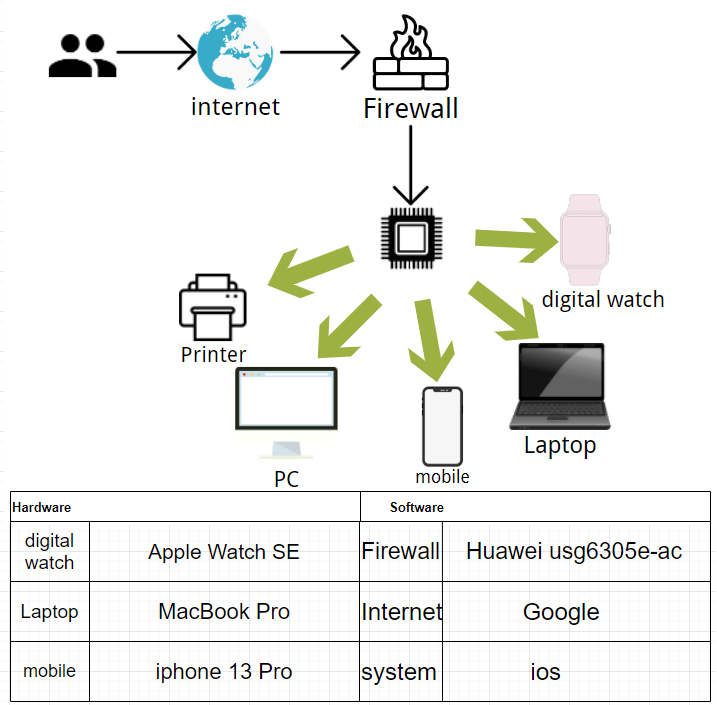

Here I will introduce the website production methods and values I want to complete.
For the majority of Internet users, web pages are to face different audience groups, provide them with the information they need, and convey the information to the audience in the way of web page integration. To some extent, the company's website plays an advertising role for the public. For designers, it is in today's era of developed networks that continuous innovation makes creative and valuable websites stand out among many "junk websites", and the most important thing is practicability

| digital watch | Laptop | mobile | PC | printer |
|---|---|---|---|---|
| Apple Watch SE | MacBook Pro | iphone 13 Pro | iMac | TSC MH240 |